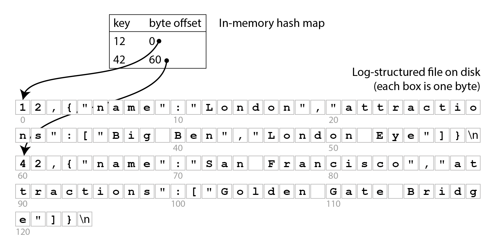
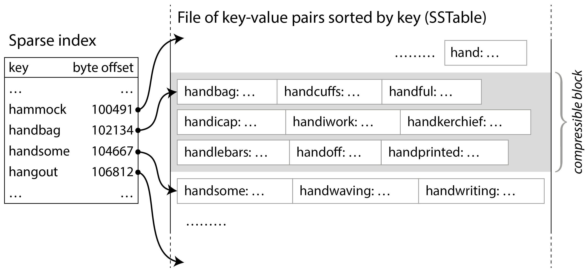
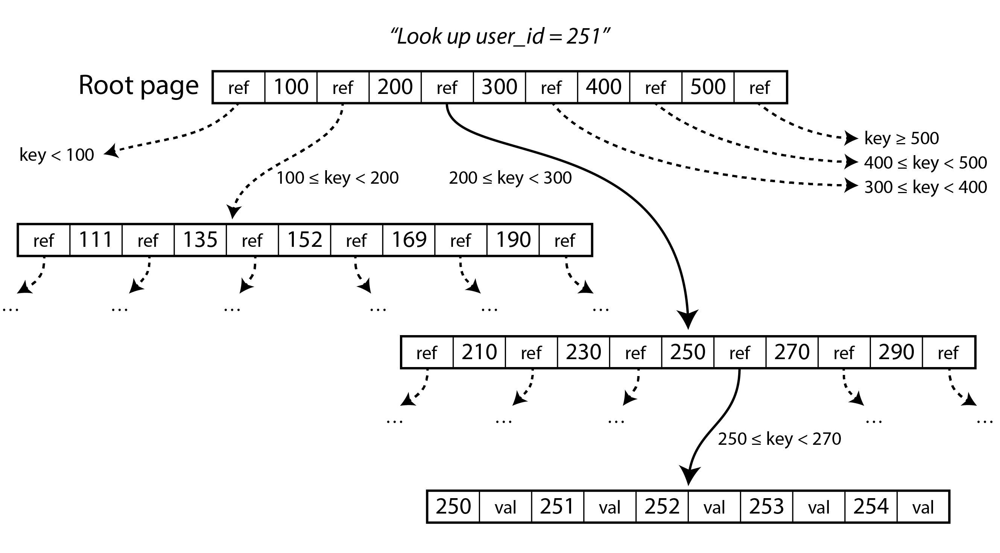
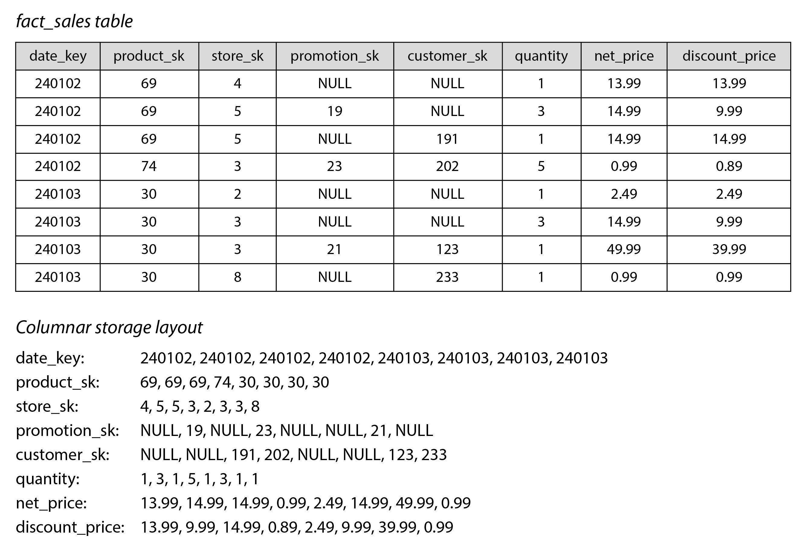
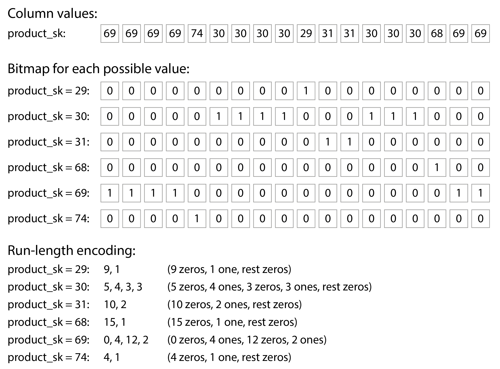

术语表 · 第 4 章 · 课程 4 / 14
存储与检索
这一章不是「数据库内部原理科普」，而是一道选择题：同样的写入量，你打算让磁盘多写几倍、让读多找几处、让后台多干多少活。B 树和 LSM 树的全部差别，最后都落在「你把写放大换成了什么」这一句话上。
计算机科学里的每个问题都可以用一层间接解决，除了「间接层太多」这个问题。
第 4 章,关于索引与写放大的取舍
4.1先看一次写入在磁盘上变成了什么
把场景钉死：一个设备埋点服务，每秒 5 万条事件写入，单条 300 字节，保留 90 天。总写入量大约每秒 15 MB、每天 1.3 TB。你要回答的不是「用哪个数据库」，而是三个更具体的问题：一次写入在磁盘上产生几次 I/O、这些 I/O 是顺序还是随机、读的时候要为「找到这条」付多少代价。
最简单的存储是只追加的日志文件：写入极快，因为完全是顺序写；但查找一条记录要扫描整个文件。索引就是用来解决这个问题的：它是一份额外的结构，用写入时的额外开销换取读取时的定位能力。这决定了本章的全部权衡方向：索引不是免费的，每个索引都会拖慢写入。

图 4-1 这个方案（Bitcask 一类）在「所有键都能装进内存」时非常好用，但它有四个死穴，四个都值得记住，因为后面每种结构都是在补其中一个：旧值占着磁盘不释放、哈希表重启要重建、哈希表必须装进内存、范围查询没法做——你无法「扫描 10000 到 19999 之间的所有键」。最后一条是关键：一旦业务需要范围扫描（时间区间、ID 前缀、分页），哈希索引就出局了。
4.2LSM 树：只追加，把随机写换成后台合并
日志结构（log-structured）这一派的核心动作只有两个：追加和合并。数据先写内存表（memtable，通常是一棵有序结构，比如跳表或红黑树），写满后整体刷成一个不可变的段文件；后台再把多个段合并、丢掉被覆盖的旧值。按键排序的段文件就是 SSTable（Sorted String Table）。

排序带来三个好处，每一条都能对照你熟悉的系统编程经验：
稀疏索引可行
因为块内有序，索引只需要每块一个键，内存占用降到千分之一量级。这就是为什么 LSM 引擎可以在几百 GB 数据上只用几十 MB 内存做索引，而图 4-1 的哈希索引必须装下所有键。
合并是顺序 I/O
合并多个有序段就是一次多路归并，读写都是顺序的、大块的。这是 LSM 写入吞吐高的根本原因：它几乎不产生随机写，随机性被推迟到后台合并里消化。
第三个好处是范围扫描：因为有序，扫一段键就是在段文件里连续读。但这里有个容易忽略的代价：LSM 的范围查询要并行扫描所有段再归并，而布隆过滤器（Bloom filter）对范围查询无能为力，因为算不出「范围内每个可能键」的哈希。所以 LSM 的点查靠布隆过滤器挡掉大部分无效段；范围查则要真的碰所有层。
还有一处工程细节，做底层的人会立刻敏感：写入放大不是均匀发生的——它会在压实（compaction）时集中爆发。memtable 写满时如果压实追不上，RocksDB 一类引擎会施加背压（backpressure），暂停读写直到刷盘完成。在你的监控上，这就是一次 p99 尖峰，而不是平均吞吐下降。压实策略因此不是调优细节，而是容量规划的一部分：
表 4-A 两种常见压实策略，选错的表现是「读延迟随数据量增长而恶化」
| 策略 | 怎么做 | 适合 | 代价 |
|---|---|---|---|
| 按大小分层（size-tiered） | 新段逐步并入更大的旧段 | 写多读少，写入吞吐优先 | 旧段可能极大，合并时临时磁盘占用高；读要查更多段 |
| 分级（leveled） | 键范围切分到多层，逐层下推 | 读占主导，点查延迟敏感 | 写放大更高，后台 I/O 更持续 |
4.3B 树：就地更新，把随机写写进设计里
B 树是另一种完全不同的哲学：数据库被切成固定大小的页（传统 4 KiB，PostgreSQL 默认 8 KiB，MySQL 默认 16 KiB），页可以就地覆写。页号乘以页大小就是文件偏移，于是「指针」这件事在磁盘上成立了，树也就成立了。

几个数字面试里能直接用：分支因子通常几百；一棵四层深、页大小 4 KiB、分支因子 500 的树最多能存 250 TB；也就是说绝大多数生产库的 B 树只有三到四层，一次点查最多四次页读，而且上面两层几乎总在缓冲池里。这是 B 树读延迟可预测的原因——也是它在 OLTP 里统治五十年的原因。
代价在写上，而且代价的形状很具体：
- 一次逻辑写入至少两次物理写：先写 WAL（预写日志）保证崩溃可恢复，再改树页。WAL 是顺序追加，页是随机覆写。
- 页内只改几个字节也要写整页。这是 B 树写放大的主要来源，而且它不可优化掉，因为崩溃恢复的粒度就是页。
- 页分裂会向上传播。插入一个键导致页满，页一分为二，父页要加引用；父页也满了就继续向上，最坏到根。随机主键会让分裂散布在整个键空间，每次分裂都是一次新的随机写。
- 页撕裂（torn page）：硬件不保证整页原子写，写一半崩溃就留下半个页。所以除了 WAL，很多引擎还要 doublewrite buffer，又一次写放大。
B 树索引也必须把每份数据至少写两次：一次写入预写日志，一次写入树页本身。为了确保 B 树能在崩溃或断电后正确恢复，有时即使页内只有几个字节发生变化，也必须写出整页。
把某个工作负载实际写入磁盘的总字节数，除以不带索引、只写仅追加日志时所需的字节数，得到的比值就是写放大。
写放大这个指标之所以重要，不只是吞吐：它还直接决定 SSD 的寿命。闪存按页（通常 4 KiB）读写、按块（通常 512 KiB）擦除；同一个块里混杂有效页和无效页时，垃圾回收必须先搬移有效页再擦除。写放大 20 倍的引擎会把 SSD 的磨损速度提高一个数量级，这在成本模型里是要算钱的，不是「性能问题」。
4.4拿什么换什么：B 树 vs LSM 的判据
先给结论，再给反例，因为这一节的常见失败是「听人说 LSM 写快就换了」，然后发现读延迟变得不可预测。
根据经验，LSM 树更适合写入密集型应用，而 B 树的读取通常更快。不过，基准测试结果往往对工作负载的细节非常敏感。只有使用自己的实际工作负载测试系统，比较才有意义。此外，LSM 树与 B 树并非严格的二选一：存储引擎有时会融合两种方法的特点。
表 4-B 评审时按这一列问：「我们这个负载，哪一行的代价会先咬人」
| 维度 | B 树 | LSM 树 |
|---|---|---|
| 写路径 | WAL + 随机覆写页，写放大高但延迟稳定 | 追加写，写放大低，但压实会周期性抢带宽 |
| 点查 | 固定 3–4 次页访问，可预测 | 要查多层段，靠布隆过滤器挡掉大部分 I/O |
| 范围查 | 叶页有序，扫描直接 | 要并行扫所有段再归并，成本高于点查 |
| 空间回收 | 删除留下碎片，要靠 vacuum 整理，文件不缩 | 压实天然重写，无空洞；删除靠墓碑逐步传播，可能很久才真正消失 |
| 快照 / 备份 | 就地覆写，做时间点快照困难 | 段不可变，记下段清单即可，几乎零成本 |
反例
用 MySQL InnoDB 存设备时序事件：单表，主键是随机 UUID，每秒 5 万插入，保留 90 天，每天凌晨用 DELETE FROM events WHERE ts < NOW() - INTERVAL 90 DAY 清理。另外在 device_id 和 ts 上各建一个二级索引。
随机 UUID 主键让每次插入落到随机的叶页上：缓冲池命中率随数据量上升而下降，一次插入触发「WAL 写 + 脏页随机写 + doublewrite」三份 I/O，再乘两个二级索引。实测写放大常在 20–30 倍，磁盘带宽在 3 亿行左右就见底。每天的大 DELETE 更糟：它产生海量 undo、把页打散成碎片，vacuum 追不上，数据文件只增不减，最终磁盘先满、查询再慢。这套设计在 1000 万行时一切正常，在 10 亿行时同时爆三个问题。
改法，按代价从低到高：①主键改成单调前缀（时间戳 + 设备 ID 的字典序编码），让插入集中在最右侧叶页，页分裂变成顺序追加，写放大能降一个数量级，这是最便宜也最有效的一步；②清理改成按时间分区 + DROP PARTITION，把「删 1 亿行」变成「删一个文件」，顺手消灭碎片；③如果写入还会继续涨，换 LSM 引擎（RocksDB / Cassandra / ScyllaDB），它的追加写和后台压实正是为这个负载设计的，代价是要接受读延迟的尾部抖动和压实期间的带宽争用；④读侧只保留真正需要的索引，每个二级索引都是一次独立的写放大。「多建一个索引」在写入密集系统里从来不是免费的。
这个反例的形状是：问题不在「选错数据库」，而在「主键形状」和「删除方式」这两个看起来无关紧要的决定上。评审里问「你的主键是单调的吗、你的历史数据是怎么删的」，比问「你用 B 树还是 LSM」有用得多。
4.5列式存储：为什么分析查询能快一到两个数量级
前面所有讨论都默认「一次读一行或几行」，这是 OLTP。分析查询的形状完全相反：扫大量行，但只用少数几列。书中给的数字很具体：事实表通常有一百多列，而典型分析查询只访问其中四五列；示例查询要扫 2024 年所有水果和糖果的销售记录，却只需要 date_key、product_sk、quantity 三列。
行式存储（row-oriented）在这里的浪费是结构性的：为了拿到三列，它必须把整行一百多列从磁盘搬到内存、逐个解析、再丢掉。列式存储做的事很简单：把同一列的值放在一起。于是「只读三列」变成了字面意义上的「只读三列的数据」——而不是「读了一百列再扔掉九十七列」。

但列式存储真正的加速来自三件事叠加，而不只是「少读列」：
一、列内数据高度重复，压缩率极高
同一列的值域往往很小（十万种产品对上十亿笔交易），适合位图编码：每个不同值一张位图，行号即位的位置，稀疏部分再用游程编码（Roaring bitmap 在两种表示间自动切换）。一列十亿行常能压到几 MB。
二、压缩后仍然可算
WHERE product_sk = 30 AND store_sk = 3 就是两张位图按位与，因为各列行顺序一致，第 k 位指的是同一行。过滤不需要解码成行，这是列存比行存快的第二个数量级来源。
第三件事是排序。列式表可以按「整行」指定排序键（注意：分别对每列独立排序毫无意义，那样就再也拼不回一行了）。把 date_key 作为第一排序键，查询「上个月」就只需扫与目标日期范围重叠的数据块；排序还有一个副作用：主排序列会出现很长的连续相同值，游程编码能把这一列压到几千字节——即使表里有几十亿行。第二、第三排序键的压缩效果依次变差，因为重复序列变短了，这是个可以预期的衰减。

4.6什么时候列存不划算
面试里问「列存有什么缺点」时，答「不适合事务」太浅了。真正的边界有三条，每一条都能对应到一个具体的架构决定：
- 单行更新极贵。 在有序表的中间插入或修改一行，从修改位置往后所有压缩列都得重写。所以列存系统的写入方式是批量导入（ETL）：写入先进入一个行式、有序的内存结构，积累够了再与磁盘上的列文件合并、成批写成新文件——旧文件保持不可变。这也意味着「一条一条地 UPDATE」在列存上是反模式，正确姿势是攒批 + 追加 + 后台合并。
- 点查不占优势。 列存的强项是「扫很多行、用少数列、做聚合」；「按主键取一行」它在结构上没有任何优势，还要额外拼装各列。所以同一套系统里常见两种引擎并存：OLTP 走行式，分析走列式，中间靠 CDC 同步。
- 高基数、无排序、随机写入的列几乎压不动。 压缩的红利来自重复与有序；一张以随机 UUID 为第一排序列、每行都不同的表，位图和游程编码都失效，剩下的只有通用压缩算法，收益退化到 2–3 倍，而你还付出了「更新要重写整列」的代价。
面试里怎么答：「B 树和 LSM 的区别可以压缩成一句话：B 树把随机写留在写入路径上，LSM 把随机性推迟到后台压实。所以 B 树写放大高：一次逻辑写至少 WAL 加整页覆写两份物理写，页内改几个字节也要写 4 KiB。但读延迟稳定，三到四层页访问就够；LSM 追加写、写放大低，代价是读要查多层段、范围查询要扫所有段归并，而且压实会和写入抢磁盘带宽，表现为周期性的 p99 尖峰。选型我看三件事：写入是不是瓶颈、读延迟能不能接受抖动、历史数据怎么删。随机主键加周期性大 DELETE 是我们见过最常见的自爆方式。列存是另一条轴，它赢在『只读需要的列 + 列内压缩 + 位图过滤』，代价是单行更新要重写整列，所以它只适合批量导入的分析负载。」——四句话，覆盖两种引擎的机制、代价与选型判据，每句都带可验证的物理事实。
练习判断该用哪种存储结构
下面五段都是真实会遇到的负载描述。不要先想产品名，先问自己：写入的形状是什么、读取的形状是什么、删除怎么发生。
A 场景：每台设备每 10 秒上报一次指标，写入量每秒 8 万条，查询几乎都是「某设备最近 6 小时」和「某设备某天聚合」，数据保留 30 天。
写入密集、几乎不更新、按时间范围读、按时间过期——这是 LSM 的标准形状。主键用（设备, 时间）单调编码，让写入集中在最右段；过期用 TTL 或按时间分区删除，避开墓碑传播慢的问题。
B 场景：账户余额表，每秒 3000 次更新，每次只改一行的一个字段，读要求 p99 在 5 毫秒内，事务必须严格串行。
低写入量、点更新、延迟敏感、需要事务——B 树在这里没有对手。列存的单行更新要重写整列，直接出局；LSM 也能用，但你会为了「省一点写放大」换来不可预测的读延迟，这笔交易不划算。
C 场景：每天导入 20 亿行点击日志，分析师跑几十个聚合查询，几乎不用主键点查，历史数据偶尔需要按天重刷。
典型 OLAP：扫大量行、用少数列、做聚合。列存 + 位图过滤 + 按日期作为第一排序键，正好让「查某几天」只碰对应数据块，同时把日期列压到极小。重刷一天的数据就是重写那一个块，天然契合不可变文件。
D 场景：用 LSM 引擎存会话数据，配置成按大小分层压实，单机 2 TB，读多写少，运维发现读 p99 随数据量增长从 3 毫秒涨到 40 毫秒。
按大小分层会让旧段变得极大，读的时候要检查更多段、更多层，布隆过滤器只能挡住不存在的键，存在时仍要逐层找。读占主导时分级压实更合适——代价是写放大上升，但这里写入本来就不多，正好是笔划算的交易。
E 场景：一张宽表有 180 列，业务侧对同一份数据既要按 ID 点查整行（每秒 5000 次），又要跑月度聚合报表。
两种访问形状在物理布局上互相冲突：点查要整行相邻，聚合要同列相邻。硬塞进一种布局，总有一边付一个数量级的代价。正解是双引擎：行存承接事务，CDC 同步到列存做分析——代价是多一条同步链路和一份存储，收益是两边都不将就。
一个团队把 OLTP 主库从 InnoDB 迁到 LSM 引擎，写入吞吐涨了 3 倍，但两周后读 p99 从 4 毫秒涨到 35 毫秒，且尖峰有周期性。最可能的原因是什么？
给一个「设备时序数据」服务选存储引擎：每秒 6 万写入、保留 90 天、约 400 亿行，查询是「单设备最近 1 小时」和「全量按小时聚合」。请给出你的选择，并写出你会放弃什么、以及上线后最可能先咬你的两个问题。
提示：两种查询形状差别很大，能不能一套引擎全包？「保留 90 天」这个约束改变了什么？
结论：一套引擎全包是可以的，但要选对形状——LSM 引擎、主键按（设备 ID, 时间戳）单调编码、按时间分区或 TTL 过期。判据是：写入占绝对主导（6 万/秒），更新几乎没有，两种查询都能被「有序 + 时间局部」覆盖。
为什么不是 B 树：6 万/秒的随机插入在 B 树上意味着持续的高写放大（WAL + 整页覆写 + 可能的 doublewrite），而且 400 亿行下缓冲池命中率会掉，随机写直接打到盘上。为什么不是列存：「单设备最近 1 小时」是点查形状，列存为了拼一行要读所有列，还要面对「单行写入要重写整列」；如果聚合查询重到必须用列存，正确做法是加一个列存副本做分析，而不是让主路径将就。
放弃了什么，要写清楚：①读延迟不再可预测——压实会周期性抢磁盘带宽，p99 会有尖峰，所以要给读路径留余量，并监控压实积压（pending compaction bytes）而不是只看平均延迟；②范围扫描要并行查多层段，扫描的成本高于点查，所以「全量按小时聚合」如果真跑全量，应该预聚合或者走列存副本；③删除不是即时的——如果过期用墓碑实现，被删数据可能在磁盘上存在很久，有合规要求时必须用分区删除或专门的存储引擎设计。
上线后最可能先咬人的两个问题：一是主键编码没做好——如果用了随机 ID 或者「设备 ID 在前但设备分布极不均匀」，会退化成随机写，写入吞吐在数据量上来后突然塌一半；二是压实跟不上——写入 6 万/秒时后台合并的带宽预算必须提前算好，很多事故是「写入没问题，但磁盘全被压实占满，读开始 40 毫秒」。这两个都不是选型错误，是参数与形状的问题，也正因为如此，它们在上线前完全可以用真实负载压测出来。
诚实的补充：如果这 400 亿行里 95% 的查询其实只覆盖最近 7 天，那么分层存储（热数据在 SSD、冷数据在对象存储）可能比换引擎收益更大——先看清楚访问分布，再决定要不要动存储层。
贴进评审文档的话：本服务采用 LSM 存储引擎（RocksDB），主键按（时间戳、设备 ID）字典序单调编码，写入为顺序追加，实测写放大约 4 倍（对比原 InnoDB 方案的 22 倍）；读路径依赖布隆过滤器挡住不存在的键，点查 p50 为 2 毫秒、p99 在压实期间可达 30 毫秒，因此读接口设置了 50 毫秒超时与重试预算。已知放弃的保证：读延迟不可预测（存在周期性尖峰）；范围扫描需并行查询多层段，全量聚合查询不在此路径上，改由每日离线列存副本承担；数据过期采用分区删除而非墓碑，因此删除延迟以分区为粒度（最长 24 小时）。
一手资源
第 4 章 存储与检索（中文全译） — 值得对照读的是「比较 B 树与 LSM 树」那一整节，尤其是写放大与磁盘空间使用两小节；它把「LSM 更省」这个流行说法拆成了四五个互相矛盾的具体指标，看完你就不会再用一句话回答选型。也可以在 Vonng/ddia 仓库里看译注与勘误。
随时问我
把你线上那张表的建表语句（含主键与所有索引）贴给我，再说一下每天写入量和数据保留策略。我帮你估一下写放大量级、指出主键形状会不会退化成随机写，以及那条周期性 DELETE 会不会在某个数据量上突然变成事故。通常不超过三处。